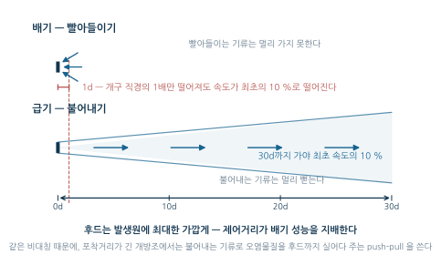
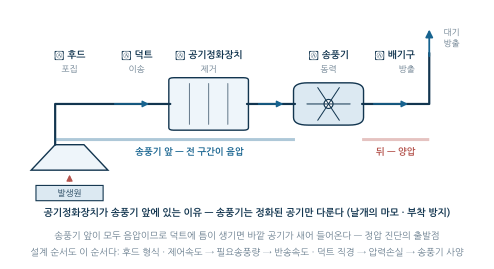
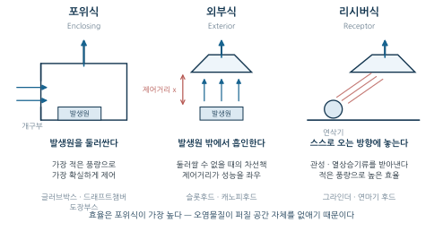
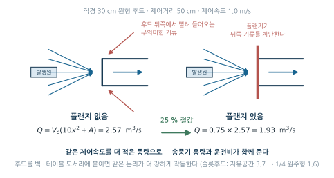
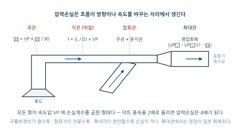
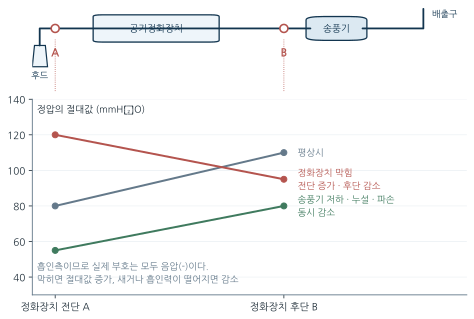

10주차. 산업환기 II — 국소배기장치
후드→덕트→공기정화기→송풍기→배기구, 제어속도와 필요송풍량, 반송속도와 압력손실, 집진·정화장치, 송풍기 상사법칙, 정압을 이용한 성능 진단
학습목표
이 주를 학습한 후 여러분은 다음을 할 수 있어야 합니다:
- 국소배기장치의 구성요소(후드→덕트→공기정화기→송풍기→배기구)와 각 요소의 설계 포인트를 설명할 수 있다
- 후드의 종류(포위식·외부식·리시버식)와 제어속도의 개념을 이해하고, 형식별 필요송풍량과 플랜지 효과를 계산할 수 있다
- 반송속도의 개념을 이해하고, 덕트의 압력손실(마찰·곡관·확대/축소)을 계산할 수 있다
- 공기정화장치를 입자상·가스상 물질별로 분류하고 선정 원칙을 설명할 수 있다
- 송풍기의 종류를 구분하고 상사법칙으로 회전수 변화에 따른 풍량·압력·동력 변화를 예측할 수 있다
- 정압 측정값의 변화로 국소배기장치의 이상 부위를 추정할 수 있다
1. 국소배기장치의 구성과 원리
1.1 왜 국소배기인가
9주차의 전체환기가 작업장 전체의 공기로 유해물질을 희석하는 방식이라면, 국소배기환기(Local Exhaust Ventilation, LEV)는 유해물질이 작업장 공기에 섞이기 전에, 발생원에서 직접 포집한다.
| 구분 | 전체환기 | 국소배기환기 |
|---|---|---|
| 원리 | 희석 | 발생원에서 직접 포집 |
| 효율 | 낮음 | 높음 |
| 적용 조건 | 저독성, 소량, 분산 발생 | 고독성, 대량, 집중 발생 |
| 초기 비용 | 낮음 | 높음 |
| 운전 비용 | 높음 (대량의 공기 교환) | 낮음 (소량의 공기만 배기) |
1주차 관리 위계의 “상류 대책 우선”이 환기에도 그대로 적용된다. 확산되기 전에 잡으면 처리할 공기량이 훨씬 적고, 근로자의 호흡영역에 도달할 기회 자체가 사라진다. 독성이 높거나 발생량이 많은 공정에는 국소배기를 우선 적용한다.
이 원칙에는 정량적 근거가 있다. 개구부 직경을 \(d\)라 할 때, 기류 속도가 최초 속도의 10%로 떨어지는 거리는 급기구(불어내기)에서는 30d, 배기구(빨아들이기) 에서는 1d다. 빨아들이는 기류는 직경의 1배만 떨어져도 속도가 1/10로 떨어진다 — 이것이 “후드는 발생원에 최대한 가깝게”라는 설계 제1원칙의 근거이며, 포착거리가 긴 개방조에 push-pull 방식(§3.2)을 쓰는 이유이기도 하다.

그림 11.1 의 두 기류는 같은 축척으로 그린 것이다. 그 차이가 30배라는 사실이 이 장 전체의 설계 논리를 지배한다. 부는 기류는 방향성이 있어 멀리 뻗지만, 빨아들이는 기류는 후드 앞의 모든 방향에서 공기를 끌어오므로 거리가 조금만 멀어져도 속도가 급격히 흩어진다. 그래서 후드를 발생원에서 떼어 놓는 순간 필요송풍량이 거리의 제곱으로 불어난다(§3.1).
1.2 다섯 가지 구성요소
국소배기장치는 다섯 요소가 직렬로 연결된 하나의 시스템이다.

| 구성요소 | 기능 | 설계 포인트 |
|---|---|---|
| 후드 (Hood) | 오염공기 포집 | 제어속도, 형상, 발생원과의 거리 |
| 덕트 (Duct) | 공기 이송 | 반송속도 확보, 압력손실 최소화 |
| 공기정화장치 | 오염물질 제거 | 처리효율, 압력손실 |
| 송풍기 (Fan) | 공기 이동의 동력 제공 | 풍량, 압력의 확보 |
| 배기구 (Stack) | 정화된 공기의 방출 | 배기의 재유입 방지 |
배치 순서에 주목하자. 공기정화장치가 송풍기 앞에 있으므로 송풍기는 정화된 공기를 다루고, 송풍기 앞쪽 전체가 음압(−)으로 운전되므로 덕트에 틈이 생기면 바깥 공기가 새어 들어온다 — 이 부호가 정압 진단(§7)의 출발점이다. 설계는 “발생원 조사 → 후드 형식 선정·배치 → 제어속도 결정 → 필요송풍량 계산 → 덕트 경로·반송속도 결정 → 덕트 직경 계산(\(Q=AV\)) → 압력손실 계산 → 공기정화장치 선정 → 송풍기 사양 결정 → 배기구 결정”의 순서이며, 이 장의 절 구성이 곧 이 순서다.
2. 후드의 세 가지 형식 · 제어속도
2.1 후드의 세 가지 형식
| 분류 | 원리 | 효율 | 적용 예 |
|---|---|---|---|
| 포위식 (Enclosing) | 발생원을 완전히 또는 부분적으로 둘러쌈 | 가장 높음 | 글러브박스, 드래프트챔버, 도장부스 |
| 외부식 (Exterior) | 발생원 외부에 설치하여 흡인 | 중간 | 슬롯후드, 캐노피후드 |
| 리시버식 (Receptor) | 발생물질의 운동에너지·열상승기류를 받아냄 | 높음 | 그라인더·연마기 후드 |
포위식은 오염물질이 퍼질 공간 자체를 없애므로 가장 적은 풍량으로 가장 확실하게 제어하고, 외부식은 발생원을 둘러쌀 수 없을 때의 차선책으로 흡인기류의 한계(§1.1) 때문에 제어거리가 성능을 좌우하며, 리시버식은 오염물질이 스스로 이동하는 방향(연삭분진의 관성, 열상승기류)에 후드를 놓아 적은 풍량으로 높은 효율을 얻는다.

무엇: (a) 실험실 드래프트챔버 또는 도장부스(포위식), (b) 용접 작업점 옆에 매달린 이동식 외부식 후드, (c) 도금조 가장자리의 슬롯후드 — 세 장의 현장 사진. 가능하면 후드 개구면과 발생원 사이의 거리가 보이는 구도로.
왜: 그림 11.3 는 원리를 보여 주지만, 현장에서 학생이 마주치는 것은 “저 후드가 무슨 형식인가”라는 판별 문제다. 실제 설비의 크기·형상·설치 위치를 한 번 보아야 형식 분류가 지식이 아니라 눈이 된다. 특히 잘못 설치된 후드 (발생원에서 멀리 떨어진 캐노피 등) 사진이 한 장 있으면 §3.1의 제어거리 논의가 곧바로 살아난다.
출처 후보: NIOSH/CDC 산업위생 자료(퍼블릭 도메인), OSHA Technical Manual Section III, 한국산업안전보건공단 「국소배기장치 기술지침」 도해, 위키미디어 커먼즈(“fume hood”, “local exhaust ventilation”).
대안: 사진을 못 구하면 KOSHA GUIDE의 후드 형식별 표준 도면을 인용 표기와 함께 싣는다.
2.2 제어속도
제어속도(제어풍속, control velocity) \(V_c\)는 오염물질을 후드 쪽으로 끌어들이기 위해 발생원 위치에서 만들어 주어야 하는 최소한의 기류 속도로, 오염물질이 세게 튀어나올수록, 주변 기류가 어지러울수록 큰 값이 필요하다.
| 오염원 상태 | 제어속도 (m/s) | 예시 |
|---|---|---|
| 정지 상태, 저속 발생 | 0.25~0.5 | 증발, 탈지 |
| 저속 기류, 활성 발생 | 0.5~1.0 | 도장, 도금 |
| 급속 기류, 고속 발생 | 1.0~2.5 | 블라스팅, 연마 |
| 고속 방출 | 2.5~10.0 | 연삭, 절단 |
이 표는 설계 권고치이고, 관리대상 유해물질을 다루는 국소배기장치에는 산업안전보건법령이 물질의 상태(가스상/입자상)와 후드 형식의 조합으로 정한 법정 최소 제어풍속이 별도로 있다.
| 물질의 상태 | 후드 형식 | 법정 제어풍속 |
|---|---|---|
| 가스 상태 | 외부식 측방흡인형 | 0.5 m/s |
| 가스 상태 | 외부식 상방흡인형 | 1.0 m/s |
| 입자 상태 | 포위식 포위형 | 0.7 m/s |
| 입자 상태 | 외부식 측방흡인형 | 1.0 m/s |
| 입자 상태 | 외부식 상방흡인형 | 측방흡인형보다 큰 값 |
표를 외우기 전에 원리를 보라. 같은 후드라면 입자 상태가 가스 상태보다 제어풍속이 크다 — 입자는 관성을 가지므로 기류 방향을 바꾸는 데 더 센 기류가 필요하다. 그리고 상방흡인형은 측방흡인형보다 큰 제어풍속이 요구된다 — 위에서 빨아들이면 오염물질이 후드 반대 방향(아래·옆)으로 퍼지기 쉽기 때문이다. 제어풍속의 현장 측정에는 열선풍속계를 사용한다(피토관은 덕트 내부의 속도압 측정용 — §7.2). 법령 조문 등 규제 측면은 14주차에서 다룬다.
3. 형식별 필요송풍량 계산 · 유입계수·유입손실계수·후드정압
3.1 형식별 필요송풍량 계산
포위식 후드: 발생원이 둘러싸여 있으므로 개구부(열린 면)로 공기가 일정 속도 이상으로 빨려 들어가기만 하면 된다: \(Q = V \times A_{\text{opening}}\). 여기서 \(V\)는 개구부 평균속도(일반 작업 0.25~0.5, 격렬한 작업 0.5~1.0 m/s), \(A_{\text{opening}}\)은 개구부 총면적(m²)이다.
외부식 후드: 발생원이 후드 밖에 있으므로 제어거리 \(x\)(후드 개구면에서 발생원까지의 거리)만큼 떨어진 지점에서 제어속도 \(V_c\)를 만들어야 한다. 원형·정사각형 개구의 필요송풍량은 Dalla Valle 식으로 계산한다 (\(Q\): m³/s, \(A\): 개구면적 m²).
\[Q = V_c\,(10x^2 + A)\]
\(x\)가 제곱으로 들어 있다 — 제어거리가 2배가 되면 필요송풍량은 대략 4배가 된다. 단, 이 식은 발생원까지의 거리가 덕트 직경의 1.5배 이내일 때만 유효하며, 그보다 멀면 제어거리를 줄이거나 슬롯·push-pull 등 다른 형식을 검토한다.
플랜지(flange) 효과: 후드 개구 둘레에 테두리 판을 붙이면 후드 뒤쪽에서 빨려 들어오던 무의미한 기류가 차단되어, 같은 제어속도를 더 적은 풍량 — \(Q_{\text{flange}} = 0.75\,Q_{\text{plain}}\), 약 25% 절감 — 으로 얻는다.
원형 후드(직경 30 cm)를 용접 작업점에서 50 cm 떨어진 곳에 설치한다. 제어속도 1.0 m/s일 때 필요송풍량과, 플랜지를 붙였을 때의 필요송풍량을 구하라.
\(A = \pi r^2 = 3.14 \times 0.15^2 = 0.071\) m², \(x = 0.5\) m이므로
\[Q = 1.0 \times (10 \times 0.5^2 + 0.071) = 2.57\ \text{m}^3/\text{s}, \qquad Q_{\text{flange}} = 0.75 \times 2.57 = 1.93\ \text{m}^3/\text{s}\]
괄호 안에서 \(10x^2 = 2.5\)가 개구면적 0.071을 압도한다 — 외부식 후드의 풍량은 대부분 “빈 공간을 빨아들이는 데” 쓰인다.

그림 11.4 의 왼쪽에서 후드 뒤쪽으로부터 빨려 들어오는 기류는 발생원을 지나지 않으므로 오염물질을 전혀 실어 오지 못한다. 그저 송풍기의 일만 늘릴 뿐이다. 플랜지는 이 몫을 차단한다.
슬롯후드: 개구부의 폭(\(W\))이 좁고 길이(\(L\))가 긴 후드로(\(W/L \le 0.2\)), 도금조·탱크 표면처럼 길게 펼쳐진 발생원에 적합하며 슬롯 개구면 속도는 5~15 m/s (일반적으로 10 m/s)로 설계한다. 필요송풍량은 후드가 놓인 공간의 형태 (원주 조건)에 따라 계수 \(C\)가 달라진다.
\[Q\ (\text{m}^3/\text{s}) = C \times L \times V_c \times X\]
| 설치 조건 | 계수 \(C\) | 식 |
|---|---|---|
| 자유공간(전원주), 플랜지 없음 | 3.7 | \(Q = 3.7\,L\,V_c\,X\) |
| 테이블·벽면에 플랜지를 붙인 1/4 원주형 | 1.6 | \(Q = 1.6\,L\,V_c\,X\) |
두 가지 개념에 주의하자. 첫째, 폭 \(W\)는 필요송풍량 식에 들어가지 않는다 — 풍량은 슬롯이 “얼마나 길게 펼쳐져 있는가”(\(L\))로 결정되며, 폭은 슬롯 개구면 속도와 개구면적을 정할 때 쓰인다. 둘째, 후드를 벽·테이블 모서리에 붙일수록 필요송풍량이 준다 — 1/4 원주형(\(C=1.6\))은 흡인해야 할 공간 자체가 1/4로 제한되어 자유공간(\(C=3.7\))의 절반 이하로 충분하다. 플랜지 효과와 같은 논리의 더 강한 형태다.
(1) 길이 1.25 m, 폭 0.25 m인 슬롯후드를 플랜지 없이 자유공간에 설치했다. 제어거리 1.0 m, 제어속도 0.5 m/s일 때 송풍량(m³/min)은? (2) 플랜지가 붙은 1/4 원주형 슬롯후드로 슬롯 폭 0.1 m, 길이 0.9 m, 제어거리 0.3 m, 제어속도 1 m/s일 때 필요송풍량(m³/min)은?
(1) \(Q = 3.7 \times 1.25 \times 0.5 \times 1.0 = 2.31\ \text{m}^3/\text{s} \;\rightarrow\; 2.31 \times 60 \approx 139\ \text{m}^3/\text{min}\)
(2) \(Q = 1.6 \times 0.9 \times 1 \times 0.3 = 0.432\ \text{m}^3/\text{s} \;\rightarrow\; 25.9\ \text{m}^3/\text{min}\)
두 문제 모두 슬롯의 폭은 계산에 쓰이지 않았다.
충만실(plenum chamber): 슬롯후드 뒤쪽에서 압력을 균일화하는 공간이다. 슬롯은 길이가 길어서 덕트를 바로 연결하면 덕트에 가까운 쪽만 세게 빨리므로, 충만실이 이 정압 편차를 없애 슬롯 전 길이에 걸쳐 균일한 개구면 속도를 만든다.
캐노피후드: 열원 상부에 설치하여 부력(열상승기류)을 이용한다. 오염물질이 스스로 올라오므로 열원이 있는 공정(용해로·가열로 등, 열발생량 > 100 W)에서 독성이 낮은 물질에 적용하며, 송풍량은 캐노피 둘레 \(P\)(m)와 열원-후드 높이 \(H\)(m)로 구한다: \(Q\ (\text{m}^3/\text{s}) = 1.4\,P\sqrt{H}\).
3.2 유입계수·유입손실계수·후드정압
후드는 공기를 덕트로 끌어들이는 입구이며, 개구면의 축류(vena contracta) 때문에 반드시 에너지 손실이 생긴다. 이 손실을 정량화하는 지표들이 후드 설계와 성능 진단의 공용 언어다(9주차의 정압 SP·동압 VP 개념을 전제로 한다).
1) 유입계수 \(C_e\) (coefficient of entry) — 이론적으로 가능한 유량에 대한 실제 유량의 비. 손실이 클수록 작아지며 \(0 < C_e \le 1\), 유입손실이 전혀 없는 이상적인 후드에서 \(C_e = 1.0\)이다.
2) 유입손실계수 \(F_h\) (hood entry loss factor) — \(C_e = 1\)이면 \(F_h = 0\)이 되어 두 정의가 정확히 맞물린다.
\[\boxed{\;F_h = \frac{1}{C_e^{\,2}} - 1\;} \qquad \Longleftrightarrow \qquad C_e = \sqrt{\frac{1}{1 + F_h}}\]
3) 후드의 압력손실(유입손실): \(\Delta P_h = F_h \times \text{VP}\)
4) 후드정압 \(SP_h\) — 속도압과 유입손실의 합 크기이며, 흡인측이므로 실제 부호는 음압(−)이다.
\[SP_h = \text{VP}(1 + F_h) = \frac{\text{VP}}{C_e^{\,2}}\]
송풍기가 후드에 만들어 준 음압(\(SP_h\))은 공기를 덕트 속도까지 가속시키는 몫(VP)과 축류·재확장 과정에서 버려지는 몫(\(F_h\cdot\)VP)으로 나뉜다 — 후드정압은 언제나 “속도압 + 유입손실”이다.
(1) 유입계수가 0.8인 후드의 유입손실계수는? (2) 유입계수 0.82, 속도압 20 mmH₂O인 단순 후드의 후드정압(크기)은? (3) 유입계수 0.7, 후드 압력손실 8.0 mmH₂O일 때 속도압은?
(1) \(F_h = \dfrac{1}{0.8^2} - 1 = 1.5625 - 1 = 0.56\)
(2) \(SP_h = \dfrac{20}{0.82^2} = \dfrac{20}{0.6724} \approx 30\ \text{mmH}_2\text{O}\) (부호는 음압)
(3) \(F_h = \dfrac{1}{0.49} - 1 = 1.0408 \;\Rightarrow\; \text{VP} = \dfrac{8.0}{1.0408} = 7.7\ \text{mmH}_2\text{O}\)
세 문제 모두 \(C_e \to F_h \to \Delta P_h \to SP_h\)의 한 사슬 위에 있다. 한 가지 주의: 압력손실 계수들은 모두 속도압에 곱하는 무차원수다. 속도압 대신 풍속(예: 20 m/s)과 비중량(1.2 kgf/m³)이 주어지면 \(F_h\)에 풍속을 그대로 곱해서는 안 되고, 먼저 \(\text{VP} = \gamma v^2/2g = 1.2 \times 20^2 / (2 \times 9.81) = 24.5\) mmH₂O로 환산한 뒤 곱한다.
push-pull 후드: 도금조처럼 상부가 개방되어 있고 개방 면적이 넓으면 흡인만으로는 포착거리가 너무 길다(§1.1의 1d 한계). 이때 한쪽에서 공기를 불어 주고(push) 반대쪽에서 흡인하는(pull) push-pull형을 쓴다 — 불어내는 기류(30d)가 오염물질을 흡인 후드까지 실어다 주는 구조로, 도금조·자동차 도장공정 등에 적합하며, 같은 조건을 흡인만으로 해결하는 것보다 동력 면에서 오히려 유리하다.
4. 덕트 설계와 압력손실
4.1 반송속도
반송속도(transport velocity)는 분진이 덕트 내부에 침전되지 않고 이송되기 위한 최소한의 덕트 내 풍속이다. 무겁고 굵은 입자일수록 큰 값이 필요하다.
| 물질 종류 | 반송속도 (m/s) | 예시 |
|---|---|---|
| 가스, 증기 | 5~10 | 유기용제 증기 |
| 연기, 미세 분진 | 10~13 | 용접흄, 담배연기 |
| 건조 분진(경량) | 13~15 | 목분진, 면분진 |
| 건조 분진(보통) | 15~18 | 곡물분진, 플라스틱 분진 |
| 무거운 분진 | 18~20 | 금속분진, 연마분진 |
| 습한 분진 | 20~25 | 습식 집진 후 |
반송속도가 부족하면 분진이 침전되어 덕트가 서서히 막히고, 퇴적 분진은 화재의 연료가 되며, 청소 비용이 늘어난다. 덕트 직경은 \(Q = AV\)에서 풍속이 반송속도 이상이 되도록 잡는다 — 덕트가 굵으면 풍속이 떨어져 분진이 가라앉으므로, “덕트는 굵을수록 좋다”는 성립하지 않는다.
덕트 설계의 기본 원칙: 가급적 원형 덕트를 쓰고, 곡관의 수를 적게, 곡률반경은 크게(반경비 2.0 이상) 하며, 직경 200 mm 덕트의 곡관 부위는 새우곡관 5개 이상으로 구성하고, 청소구를 설치한다. 분기 설계에는 등속설계법(주덕트와 지관의 풍속을 동일하게)과 정압평형법(각 지관의 압력손실을 균등하게)을 쓰며, 합류 후에는 속도 유지를 위해 단면적을 늘린다(\(A_1 = A_2 + A_3\)).
4.2 압력손실의 두 성분
덕트 내 압력손실은 마찰손실(직관)과 형상손실(부속)의 합이다.
\[\Delta P_{\text{total}} = \Delta P_{\text{friction}} + \Delta P_{\text{fitting}}\]
1) 마찰손실 (직관) — \(f\): 마찰계수(0.02~0.05, 일반적으로 0.03), \(L\): 덕트 길이(m), \(D\): 직경(m):
\[\Delta P_f = f\,\frac{L}{D}\,\text{VP}\]
2) 형상손실 (부속) — \(\zeta\): 부속별 손실계수 (직각 엘보 0.5~1.0, 완만한 엘보 0.2~0.3, 분기관 0.5~1.5, 확대관 0.1~0.5, 축소관 0.2~0.3):
\[\Delta P_{\text{fitting}} = \zeta \times \text{VP}\]
두 식 모두 속도압 VP에 비례한다. VP는 풍속의 제곱에 비례하므로 (9주차), 덕트 풍속을 2배로 올리면 압력손실은 4배가 된다 — 반송속도는 채우되 그 이상 과속하지 않는 것이 경제적 설계다.
4.3 각형 덕트의 상당직경
마찰손실 식의 \(D\)는 원형 덕트의 직경이다. 덕트가 각형(사각)이면 같은 압력손실을 내는 원형 덕트의 직경, 즉 상당직경(등가직경)으로 바꿔 넣는다.
\[\boxed{\;d_e = \frac{2ab}{a + b}\;}\]
\(a\), \(b\)는 단면의 두 변 길이(m)다. 두 변의 조화평균이므로 항상 짧은 변보다 크고 긴 변보다 작다 — 계산 결과가 이 범위를 벗어나면 잘못된 것이다.
4.4 부속별 압력손실 계산
1) 곡관 — 각도에 비례 보정: 손실계수 \(\zeta\)는 보통 90° 곡관 기준으로 주어진다. 곡관각이 \(\theta\)이면 손실은 각도에 비례한다.
\[\Delta P_{\theta} = \zeta \times \text{VP} \times \frac{\theta}{90°}\]
2) 합류관 — 주관과 분지관의 손실을 더한다:
\[\Delta P_{\text{합류}} = \zeta_{\text{주관}} \times \text{VP}_{\text{주관}} + \zeta_{\text{분지관}} \times \text{VP}_{\text{분지관}}\]
3) 확대관 — 정압회복: 덕트가 확대되면 풍속이 줄고, 줄어든 속도압만큼 정압이 회복된다. 다만 확대 과정의 와류 손실 때문에 전부 회복되지는 않는다.
\[\text{정압회복량} = (\text{VP}_1 - \text{VP}_2)(1 - \zeta)\]
\((1-\zeta)\)가 “회복되는 비율”, \(\zeta\)가 “버려지는 비율”이다 — 어느 쪽을 곱하는지 개념으로 구분해 두자.
4) 배치 인자: 곡관의 반경비(곡률반경/직경)가 클수록 손실 감소, 합류관의 합류각이 클수록 분지관 손실 증가, 확대각·축소각이 클수록 손실 증가 — 공통 원리는 기류의 방향·속도를 급하게 바꿀수록 손실이 커진다는 것이다.

그림 11.5 를 보면 손실의 발생 지점이 한눈에 정리된다 — 직관에서는 벽면 마찰로 꾸준히, 곡관·합류관에서는 방향이 꺾이는 그 자리에서 한 번에 잃는다. 확대관만이 부호가 반대여서, 잃는 대신 정압을 일부 되찾는다. 네 항 모두 속도압 VP에 무차원 계수를 곱한 형태이므로, 계통 전체의 압력손실은 구간별 손실을 단순히 더해서 얻는다 — 그 합이 곧 송풍기가 이겨 내야 할 저항이며 §6.4의 시스템 저항곡선이다.
(1) 가로 0.13 m, 세로 0.26 m, 길이 15 m인 직선 각형 덕트에서 속도압이 20 mmH₂O, 관마찰계수가 0.016일 때 압력손실은? (2) 곡률반경비 2.5인 90° 곡관의 압력손실계수가 0.22이고 속도압이 15 mmH₂O이다. 다른 조건은 같고 곡관각만 45°로 바꾸면 압력손실은? (3) 주관에 45°로 분지관이 연결되어 있다. 주관과 분지관의 속도압이 모두 10 mmH₂O이고 압력손실계수가 각각 0.2와 0.28일 때 합류로 인한 압력손실은? (4) 원형 확대관에서 입구 직관의 속도압 30 mmH₂O, 출구 직관의 속도압 20 mmH₂O, 압력손실계수 0.28일 때 정압회복량은?
(1) 상당직경 \(d_e = \dfrac{2 \times 0.13 \times 0.26}{0.13 + 0.26} = 0.173\) m, \(\Delta P_f = 0.016 \times \dfrac{15}{0.173} \times 20 \approx 28\ \text{mmH}_2\text{O}\). 단변이나 장변을 그대로 \(D\)에 넣으면 답이 크게 벗어난다.
(2) \(\Delta P = 0.22 \times 15 \times \dfrac{45}{90} = 1.65\ \text{mmH}_2\text{O}\) (각도 비례 보정)
(3) \(\Delta P = 0.2 \times 10 + 0.28 \times 10 = 4.8\ \text{mmH}_2\text{O}\) (두 손실의 합)
(4) \((30 - 20)(1 - 0.28) = 7.2\ \text{mmH}_2\text{O}\) (회복 비율은 \(1-\zeta\))
5. 공기정화장치
정화장치는 처리 대상이 입자상(분진·흄·미스트)인가 가스상(가스·증기)인가에 따라 원리가 완전히 다르다. 입자상은 힘(중력·관성·원심력·정전기력)이나 여과로 입자를 분리하고, 가스상은 분자 수준에서 용해·흡착·분해해야 한다 — 이 구분을 놓치면 “증기 공정에 여과식 집진기”(§7.4)라는 무의미한 설비가 만들어진다.
5.1 집진장치의 종류 개관
| 집진장치 | 원리 | 집진효율 | 적용 입경 (μm) | 압력손실 |
|---|---|---|---|---|
| 중력집진기 | 중력침강 | 낮음(50~70%) | >50 | 낮음 |
| 관성집진기 | 관성력 분리 | 중간(70~90%) | 10~50 | 낮음 |
| 사이클론 | 원심력 분리 | 중고(8095%) | 5~20 | 중간 |
| 세정집진기 | 액체 세정 | 고(90~99%) | 0.5~5 | 중간~높음 |
| 백필터(여과) | 여과 | 매우 높음(99~99.9%) | 0.1~10 | 중간 |
| 전기집진기 | 정전기력 | 매우 높음(99~99.9%) | 0.01~10 | 낮음 |
표를 위에서 아래로 읽으면 “굵은 입자용·저효율·저손실”에서 “미세 입자용·고효율”로 내려간다. 실무에서는 이 서열을 이용해, 본 집진장치 앞에 입경과 비중이 큰 입자를 미리 제거하는 전처리(조집진) 단계 — 중력·관성력·원심력(사이클론) 집진기 — 를 둔다. 여과집진기(백필터)는 전처리용으로 부적합하다 — 고효율 장치라서 조대·고농도 분진을 받으면 여과포가 금방 막히므로, 전처리를 거친 뒤에 놓이는 본 집진장치다.
선정의 기준은 요구되는 집진효율, 오염물질의 함진농도와 입자 크기, 총 에너지 요구량(압력손실이 클수록 송풍기 동력이 커진다)이다. 오염물질의 회수율은 선정 기준이 아니다 — 집진장치의 목적은 배출 저감이지 자원 회수가 아니다.
중력집진기는 가장 단순한 장치로, Stokes 법칙에 따른 분진의 자연침강을 이용한다(침강속도는 입경의 제곱과 분진 밀도에 비례). 효율을 높이려면 처리가스의 배기속도를 작게(체류시간 확보), 수평 도달거리를 길게, 침강실 내 기류를 균일하게, 침강높이를 작게 한다 — 떨어질 높이가 낮을수록 짧은 체류시간에도 입자가 바닥에 닿아 포집되기 때문이다.
5.2 사이클론
원심력을 이용하는 가장 보편적인 조집진장치다. 작동 원리: ① 접선방향으로 유입된 공기가 원통 내부에서 회전(와류 형성) → ② 원심력으로 무거운 입자가 벽면으로 이동 → ③ 벽면을 따라 하강하여 하부의 분진 수집부로 배출 → ④ 정화된 공기는 중심부 와류를 따라 상승하여 상부로 배출.
집진효율 향상 방법: 사이클론 직경 감소(소형 다중 사이클론), 유입속도 증가(원심력 증가 — 적정 유입속도는 7.0~15.0 m/s), 분진 비중 증가, 높이/직경 비 증가. 다만 미세분진(< 5 μm)에는 효율이 낮아 주로 전처리(조집진)용으로 쓴다. 성능의 대표 지표는 절단입경(cut-size) — 50%의 처리효율로 제거되는 입자의 입경으로, 작을수록 미세입자까지 잡는 고성능 사이클론이다.
블로다운(blow-down): 분진박스(호퍼)에서 처리가스의 일부(배기량의 5~10%)를 흡인하여 사이클론 하부의 난류를 억제하고, 이미 집진된 먼지가 다시 날리는 재비산을 방지하는 집진율 향상 기법이다. 효과는 집진효율 상승·원심력 상승· 비산 방지이며, 부식 방지와는 무관하다.
5.3 백필터 (여과집진기)
여과포로 분진을 포집하는 고효율 집진장치다. 포집 원리는 관성충돌·직접차단·확산·정전기의 네 가지가 복합적으로 작용한다 — 원심력은 사이클론의 원리이지 여과의 원리가 아니다.
여과포에 쌓인 분진을 털어내는 탈진 방식에는 기계적 진동(간단·저렴하나 효율 낮음), 역기류(여과포 수명이 김), 펄스제트(압축공기 충격 — 가장 효과적이며 연속 운전 가능)가 있다. 백필터의 크기는 기-포비(air-to-cloth ratio) \(= Q/A_{\text{cloth}}\) (m³/m²·min, 일반적으로 1~3)로 결정하며, 높을수록 장치는 작아지지만 압력손실이 커진다. 장점은 다양한 용량·형태의 분진 처리가 가능하고 가스의 양·밀도 변화에 영향을 받지 않는다는 것, 단점은 고온·부식성 물질을 포집할 수 없다는 것이다 — 여과포가 견디지 못하기 때문이다.
5.4 전기집진기 (ESP)
정전기력으로 미세입자까지 포집하는 고효율 장치다. 작동 원리: ① 방전극(− 고전압)에서 코로나 방전 → ② 분진 입자가 음전하로 대전 → ③ 대전 입자가 집진극(+)으로 정전 흡인 → ④ 주기적으로 집진극을 타격하여 탈진.
장점: 고온가스 처리 가능(보일러·철강로에도 설치), 압력손실이 낮아 송풍기 가동비 저렴, 운전·유지비 저렴, 0.01 μm 수준의 미세입자까지 포집, 넓은 입경·농도 범위에서 고효율·대용량 처리. 단점: 초기 설치비가 비싸고 고전압을 다루며, 압력손실·운전비가 낮은 것과 달리 설치공간은 많이 차지한다. 그리고 정전기력은 입자를 대전시키는 힘이므로 가스상 오염물질에는 원리적으로 작동하지 않는다 — 가스·증기는 §5.5의 방식으로 처리해야 한다.
5.5 가스상 물질의 정화장치
| 종류 | 원리 | 적용 물질 | 특징 |
|---|---|---|---|
| 흡수탑(세정, Scrubber) | 액체에 용해 | 수용성 가스(HCl, NH₃, SO₂) | 동시 냉각 효과 |
| 흡착탑(Adsorber) | 활성탄 등에 흡착 | 유기용제, 악취 | 재생 가능, 회수 용이 |
| 연소장치 | 고온 산화분해 | 가연성 VOCs | 에너지 소비 큼 |
| 촉매산화 | 촉매로 저온 산화 | 저농도 VOCs | 에너지 절감 |
유기용제 증기는 활성탄 흡착, 수용성 가스는 흡수, 가연성 VOCs는 연소·촉매산화 — 물질의 성질이 장치를 결정한다.
6. 송풍기
6.1 송풍기의 종류
송풍기는 공기가 임펠러를 통과하는 방향에 따라 원심식(반경 방향)과 축류식(축방향)으로 나뉘며, 원심식은 날개 형태가 성능과 용도를 결정한다.
| 형식 | 날개 형태 | 특징 | 적용 |
|---|---|---|---|
| 다익팬(시로코) | 전향(forward curved) | 저압·대풍량, 저소음 | 전체환기, 공조 |
| 터보팬 | 후향(backward curved) | 고효율(80~85%), 분진에 약함 | 청정공기 이송 |
| 래디얼팬 | 방사(radial) | 분진에 강함, 내구성 우수 | 국소배기, 집진기 |
| 에어포일 | 익형(airfoil) | 최고 효율(85~90%), 고가 | 대형 공조·환기 |
국소배기·집진 계통에는 분진을 머금은 공기가 지나가므로, 효율은 중간이지만 날개에 분진이 쌓이지 않는 래디얼팬이 흔히 선택되고, 효율 좋은 터보팬은 정화된 청정공기 쪽에 쓴다 — “이 공기에는 어느 팬인가”가 올바른 질문이다. 축류식에는 프로펠러 팬(저압·대풍량, 벽부착형 전체환기), 튜브축류 팬(중압, 터널 환기 등 덕트 연결), 베인축류 팬(고압, 안내깃 부착, 산업용 대형 환기)이 있다.
무엇: 다익(전향)·터보(후향)·래디얼(방사)·에어포일(익형) 임펠러를 나란히 찍은 사진, 또는 케이싱을 열어 날개의 굽은 방향이 보이는 근접 사진. 회전 방향 화살표가 함께 표시되면 가장 좋다.
왜: “전향/후향”이라는 말은 날개가 회전 방향으로 굽었는가, 반대로 굽었는가라는 기하학적 사실인데, 글로만 읽으면 끝내 감이 오지 않는다. 날개 사이 골이 얕은 다익팬에 왜 분진이 쌓이는지, 골이 없는 래디얼팬이 왜 분진에 강한지도 사진 한 장이면 즉시 설명된다.
출처 후보: 위키미디어 커먼즈(“centrifugal fan impeller”, “squirrel cage fan”), 송풍기 제조사 기술자료(사용 허가 확인 필요), ASHRAE·ACGIH 교재 도해.
대안: 사진을 못 구하면 임펠러 단면을 위에서 본 모식도(회전 방향 화살표와 날개 곡률 방향을 표시)를 직접 그려 넣는다.
6.2 송풍기 상사법칙
같은 송풍기에서 회전수 \(N\)을 바꾸면 풍량·압력·동력이 각각 다른 비율로 변한다.
| 항목 | 법칙 | 수식 |
|---|---|---|
| 풍량 | 회전수에 1승 비례 | \(Q_2 = Q_1 \left(\dfrac{N_2}{N_1}\right)\) |
| 압력 | 회전수에 2승 비례 | \(P_2 = P_1 \left(\dfrac{N_2}{N_1}\right)^2\) |
| 동력 | 회전수에 3승 비례 | \(L_2 = L_1 \left(\dfrac{N_2}{N_1}\right)^3\) |
풍량은 임펠러가 미는 속도에 비례하고(1승), 압력은 속도압처럼 속도의 제곱을 따르며(2승), 동력은 “풍량 × 압력”이므로 둘을 곱한 3승이 된다.
송풍기가 1,200 rpm에서 풍량 100 m³/min, 정압 50 mmH₂O, 동력 5 kW로 운전 중이다. 회전수를 1,500 rpm으로 올리면 풍량·정압·동력은 각각 얼마가 되는가?
\(N_2/N_1 = 1500/1200 = 1.25\)이므로
- 풍량: \(Q_2 = 100 \times 1.25 = 125\ \text{m}^3/\text{min}\)
- 정압: \(P_2 = 50 \times 1.25^2 = 78.1\ \text{mmH}_2\text{O}\)
- 동력: \(L_2 = 5 \times 1.25^3 = 9.77\ \text{kW}\)
회전수 25% 증가로 풍량은 25% 늘지만 동력은 약 2배가 된다 — 반대로 회전수를 낮추면 동력이 훨씬 큰 폭으로 절감되므로, 회전수 제어는 강력한 에너지 절약 수단이다.
6.3 소요동력
송풍기가 풍량 \(Q\)(m³/min)를 전압 \(P\)(mmH₂O)만큼 밀어 올리는 데 필요한 동력은 다음과 같다. \(\eta\)는 전효율(보통 0.5~0.7), 6,120은 단위 환산 계수다 (1 kW = 102 kgf·m/s에서 유도). SI 단위(\(Q\): m³/s, \(P\): Pa)로는 \(L = QP/(1000\,\eta)\).
\[L\ (\text{kW}) = \frac{Q \times P}{6{,}120 \times \eta}\]
6.4 성능곡선과 운전점, 풍량 조절
송풍기가 실제로 내는 풍량은 P-Q 선도에서 송풍기 성능곡선과 시스템 저항곡선 (계통의 압력손실 특성)의 교점 — 운전점이 결정한다. §4의 압력손실 계산을 틀리면 저항곡선이 어긋나 송풍기가 설계와 다른 풍량으로 도는 이유다. 운전 중에 풍량을 바꾸는 방법은 세 가지 — 회전수 변화법(임펠러 회전수 \(N\) 조작, 상사법칙 적용), 댐퍼(damper) 부착법(덕트 댐퍼의 개도로 계통 저항 조작), Vane control법(송풍기 흡입측 안내깃의 각도 조작)이다.
에너지 면에서는 회전수 변화법이 우월하다 — \(L \propto N^3\)이므로 회전수를 낮추면 동력은 풍량 감소 폭보다 훨씬 크게 준다. 댐퍼는 반대로 저항을 일부러 추가해 풍량을 죽이는 방식이라 에너지가 낭비된다.
7. 성능 검증과 유지관리
설계·설치가 끝난 국소배기장치는 사용 중에 반드시 성능이 떨어진다 — 여과포에 분진이 쌓이고, 덕트가 막히고, 연결부가 풀린다. 성능 검증의 핵심 도구는 변화 패턴이 고장 부위를 가리켜 주는 정압 측정이다.
7.1 보충용 공기 — 빼낸 만큼 넣어 준다
국소배기장치가 빼낸 것과 같은 양의 공기가 외부로부터 보충되어야 하며, 이 공기를 보충용 공기(make-up air), 이를 공급하는 설비 일체를 공기공급 시스템이라 한다.
급기(\(Q_{in}\))가 배기(\(Q_{out}\))보다 부족하면 작업장은 과도한 음압이 되어 후드 배풍량이 줄고, 문·틈새로 찬 외기가 세게 유입되며, 연소기구의 역화·배기 역류 위험이 생긴다. 공기공급 시스템이 필요한 이유는 네 가지다: ① 국소배기장치의 적정한 작동; ② 근로자에게 영향을 미치는 냉각기류의 제거; ③ 정화되지 않은 실외공기의 무질서한 유입 방지; ④ 연료 절약과 안전사고 예방. 반면 “작업장에 교차(방해)기류를 만들기 위해서”는 목적이 될 수 없다 — 교차기류는 후드 앞의 제어기류를 흐트러뜨리는 제거 대상이다(§7.4).
실내압의 방향도 원리로 정해진다. 오염이 높은 작업장의 실내는 음압(−)으로 유지한다 — 오염물질이 인접한 청정구역으로 새어 나가지 못하게 하기 위해서다 (반대로 청정실은 양압으로 유지한다). 에너지 절약을 위해 실내 공기를 재순환시켜 외기와 혼합 공급하는 경우, 급기 중 외기의 비율은 CO₂ 농도의 물질수지
\[\text{외부공기 함량}(\%) = \frac{C_{\text{재순환}} - C_{\text{급기}}}{C_{\text{재순환}} - C_{\text{외기}}} \times 100\]
로 구한다. 예컨대 재순환 공기 700 ppm, 급기 600 ppm, 외기 300 ppm이면 \((700-600)/(700-300) \times 100 = 25\,\%\)다.
7.2 압력은 어디서 재는가
정압·속도압은 기류가 안정된 곳에서 재야 한다. 후드나 곡관 직후처럼 흐름이 흐트러진 지점에서 재면 값이 왜곡되므로, 측정공은 곡관 연결부나 일반적인 정압·속도압 동시 측정에서는 덕트 직경의 4~6배 떨어진 지점에, 후드가 직관과 일직선으로 연결된 경우(후드정압 측정)에는 2~4배 지점에 둔다.
덕트 내부의 전압·속도압은 피토관으로, 후드 개구면·발생원 위치의 제어풍속은 열선풍속계로 잰다. 속도압을 재면 9주차의 관계식으로 풍속을, \(Q = AV\)로 풍량을 역산할 수 있다.
7.3 정압 변화로 고장 부위 찾기
진단의 기본 원리는 하나다. 막히면 그 상류 구간(후드 쪽)에서 잰 정압의 절대값이 커지고, 새거나 흡인력이 떨어지면 절대값이 작아진다(흡인측은 음압이므로 “절대값”으로 말한다). 계통을 “후드 → 덕트 → [A] → 공기정화장치 → [B] → 송풍기 → 배출구”로 그리고 전단(A)·후단(B)의 정압을 함께 보면 원인이 갈라진다.
| 관찰된 현상 | 추정 원인 |
|---|---|
| 송풍기 정압이 갑자기 증가 | 백필터에 분진 퇴적, 덕트라인에 분진 퇴적, 후드 댐퍼 닫힘 |
| 정화장치 전단(A)·후단(B)의 정압이 동시에 감소 | 송풍기 능력 저하, 또는 송풍기–덕트 연결부 풀림(점검 뚜껑 열림 포함) |
| 정화장치가 막힘 | 전단 A의 정압 절대값 증가, 후단 B의 정압 절대값 감소 |

그림 11.6 의 세 선을 구분하는 것은 두 측정점이 같은 방향으로 움직이는가 하나뿐이다. 전단과 후단이 갈라지면(A 증가, B 감소) 그 사이가 막힌 것이고, 함께 낮아지면 계통 전체를 당기는 힘이 약해진 것이다.
백필터의 여과포가 찢어지면 분진은 제거되지 않지만 공기 저항은 오히려 줄어들어 정압 절대값이 낮아진다. 반대로 여과포에 분진이 퇴적되면 저항이 커져 정압이 증가한다. “정압 증가 = 어딘가 막힘, 정압 감소 = 어딘가 새거나 뚫림”이라는 대응만 잡으면 표의 모든 행을 유도할 수 있다.
7.4 적정 운전 상태의 판단
적합한 상태: 사용하지 않는 후드는 댐퍼로 차단되어 있다 — 노는 가지를 막아야 가동 중인 후드에 필요한 배풍량이 확보된다.
부적합한 상태와 그 이유: ① 최종 배출구가 작업장 내부에 있다 — 배출한 오염공기가 다시 작업장으로 들어온다; ② 증기 발생 공정(도장 등)에 여과식 정화장치를 설치했다 — 여과는 입자상 물질용 원리이며, 가스·증기는 흡수·흡착· 연소로 처리해야 한다(§5.5); ③ 선풍기로 오염물질 발생 지점을 향해 바람을 분다 — 후드 앞에 교차기류를 만들어 포집을 무너뜨린다(§7.1).
요약
| 개념 | 핵심 내용 |
|---|---|
| 구성 5요소 | 후드 → 덕트 → 공기정화장치 → 송풍기 → 배기구 (정화장치는 송풍기 앞). 급기는 30d, 배기는 1d에서 속도 1/10 — 후드는 발생원에 최대한 가깝게 |
| 후드 3형식 | 포위식(최고 효율) · 외부식(제어거리가 관건) · 리시버식(발생 방향 이용) |
| 제어속도 | 발생원 위치에서 필요한 최소 기류속도. 입자상 > 가스상, 상방흡인형 > 측방흡인형 |
| 필요송풍량 | 외부식 \(Q = V_c(10x^2 + A)\) (거리의 제곱, 플랜지로 25% 절감) · 슬롯 \(Q = C\,L\,V_c\,X\) (폭 무관, 자유공간 3.7 / 1/4 원주형 1.6) |
| 후드정압 | \(F_h = 1/C_e^2 - 1\), \(\Delta P_h = F_h\cdot\)VP, \(\lvert SP_h \rvert\) = VP + 유입손실 = VP\(/C_e^2\) |
| 반송속도 | 분진이 침전하지 않는 최소 덕트 풍속 (가스 5~10 ~ 무거운 분진 18~20 m/s) |
| 압력손실 | 마찰 \(f\frac{L}{D}\)VP + 형상 \(\zeta\cdot\)VP. 각형은 상당직경 \(d_e = 2ab/(a+b)\), 곡관은 각도 비례, 확대관 정압회복 \((\text{VP}_1-\text{VP}_2)(1-\zeta)\) |
| 집진장치 | 중력·관성·사이클론(전처리용) → 세정 → 백필터·ESP(고효율). 가스상은 흡수·흡착·연소·촉매 |
| 사이클론·ESP | 사이클론: 절단입경(효율 50% 입경)·블로다운(배기량 5~10% 흡인, 재비산 방지) / ESP: 저손실·고온 가능, 설치공간 크고 가스상 부적합 |
| 송풍기 상사법칙 | \(Q \propto N\), \(P \propto N^2\), \(L \propto N^3\) — 소요동력 \(L = QP/(6120\,\eta)\) |
| 보충용 공기 | 배기량만큼 급기. 부족하면 과도한 음압으로 배풍량 저하. 작업장은 약한 음압 유지 |
| 정압 진단 | 막히면 정압 절대값 증가, 새면 감소. 정화장치 막힘 = 전단 증가·후단 감소 |
연습문제
문제 1. 외부식 후드의 설계
원형 외부식 후드(직경 40 cm)를 발생원에서 30 cm 떨어진 위치에 설치하려 한다. 제어속도는 0.5 m/s가 필요하다.
- 플랜지가 없을 때 필요송풍량(m³/s, m³/min)을 구하라.
- 플랜지를 설치하면 필요송풍량은 얼마가 되는가?
- 같은 후드를 발생원에서 60 cm 위치로 옮기면 (1)의 송풍량은 대략 몇 배가 되는지 계산하고, 그 이유를 설명하라.
정답 및 해설
(1) \(A = \pi \times 0.2^2 = 0.126\) m², \(x = 0.3\) m이므로 \(Q = 0.5 \times (10 \times 0.3^2 + 0.126) = 0.513\) m³/s ≈ 30.8 m³/min
(2) \(Q_{\text{flange}} = 0.75 \times 0.513 = 0.385\) m³/s ≈ 23.1 m³/min (25% 절감)
(3) \(x = 0.6\) m이면 \(Q = 0.5 \times (3.6 + 0.126) = 1.86\) m³/s로 약 3.6배 — \(10x^2\) 항이 지배적이어서 송풍량이 거리의 제곱에 가깝게 는다. 후드를 발생원에 붙이는 것이 송풍기 용량을 줄이는 가장 값싼 설계 수단이다.문제 2. 유입계수와 후드정압
어느 외부식 후드의 유입계수가 0.75이고, 덕트 내 속도압이 25 mmH₂O로 측정되었다.
- 유입손실계수 \(F_h\)는?
- 후드의 압력손실(유입손실)은?
- 후드정압의 크기는? “속도압 + 유입손실”로 검산하라.
정답 및 해설
(1) \(F_h = \dfrac{1}{0.75^2} - 1 = 1.778 - 1 = 0.778\)
(2) \(\Delta P_h = 0.778 \times 25 = 19.4\ \text{mmH}_2\text{O}\)
(3) \(\lvert SP_h \rvert = \dfrac{25}{0.5625} = 44.4\ \text{mmH}_2\text{O}\) (흡인측이므로 부호는 음압). 검산: VP + \(\Delta P_h\) = 25 + 19.4 = 44.4 ✓문제 3. 덕트 계통의 압력손실
가로 0.25 m × 세로 0.35 m의 각형 직관 12 m(속도압 15 mmH₂O, 관마찰계수 0.02)에 이어 압력손실계수 0.27인 곡관(90° 기준)을 60°로 설치한 계통이 있다.
- 각형 직관의 상당직경과 마찰 압력손실을 구하라.
- 60° 곡관의 압력손실을 구하라.
- 이 구간 하류의 확대관에서 속도압이 15 → 8 mmH₂O로 줄었고 압력손실계수가 0.3이라면 정압회복량은?
정답 및 해설
(1) \(d_e = \dfrac{2 \times 0.25 \times 0.35}{0.25 + 0.35} = 0.292\) m (0.25와 0.35 사이 — 타당), \(\Delta P_f = 0.02 \times \dfrac{12}{0.292} \times 15 = 12.3\ \text{mmH}_2\text{O}\)
(2) 각도 비례 보정: \(\Delta P = 0.27 \times 15 \times \dfrac{60}{90} = 2.7\ \text{mmH}_2\text{O}\)
(3) \((15 - 8)(1 - 0.3) = 7 \times 0.7 = 4.9\ \text{mmH}_2\text{O}\)
직관+곡관의 손실 \(12.3 + 2.7 = 15.0\) mmH₂O에서 확대관이 4.9 mmH₂O의 정압을 회복시킨다. 이런 구간별 합산이 시스템 저항곡선 — 곧 송풍기 운전점(§6.4)을 결정한다.문제 4. 송풍기의 회전수 변경과 동력
송풍기가 1,000 rpm에서 풍량 80 m³/min, 전압 60 mmH₂O로 운전 중이며 전효율은 0.6이다.
- 현재의 소요동력(kW)을 구하라.
- 회전수를 1,200 rpm으로 올리면 풍량·전압·동력은 각각 얼마가 되는가?
- 이 결과를 근거로, 풍량 조절에서 회전수 변화법이 댐퍼 방식보다 에너지 면에서 유리한 이유를 설명하라.
정답 및 해설
(1) \(L = \dfrac{80 \times 60}{6{,}120 \times 0.6} = 1.31\ \text{kW}\)
(2) \(N_2/N_1 = 1.2\): 풍량 \(80 \times 1.2 = 96\) m³/min, 전압 \(60 \times 1.2^2 = 86.4\) mmH₂O, 동력 \(1.31 \times 1.2^3 = 2.26\) kW
(3) 동력이 회전수의 3승을 따르므로 풍량을 20% 줄이면 동력은 약 절반 (\(0.8^3 = 0.51\))이 된다. 댐퍼는 저항을 추가해 풍량을 줄이는 방식이라 이런 절감 없이 에너지를 손실로 버린다.문제 5. 정압 측정에 의한 이상 진단
공기정화장치(백필터) 전단(A)과 후단(B)에 정압 측정공이 있고, 평상시 정압은 A = −80, B = −110 mmH₂O였다. 다음 각 측정 결과의 가장 가능성이 높은 원인을 추정하고 근거를 설명하라.
- A = −120 mmH₂O, B = −95 mmH₂O (절대값: A 증가, B 감소)
- A = −55 mmH₂O, B = −80 mmH₂O (절대값: A·B 동시 감소)
- 어느 날 백필터의 여과포 일부가 찢어졌다면 A·B의 절대값은 각각 어느 방향으로 변하겠는가?
정답 및 해설
(1) 공기정화장치(백필터)의 막힘. 막히면 그 앞(A)에서는 저항이 커져 정압 절대값이 증가하고, 뒤(B)에서는 공기가 잘 넘어오지 못해 절대값이 감소한다 — 전단 증가·후단 감소는 “그 사이가 막혔다”는 신호다.
(2) 송풍기 능력 저하 또는 송풍기–덕트 연결부 풀림. 전·후단이 같은 방향으로 동시에 감소하는 것은 시스템 전체를 당기는 힘이 약해졌다는 뜻이다.
(3) A·B 모두 절대값 감소. 여과포가 찢어지면 분진은 제거되지 않지만 공기 저항은 오히려 줄어든다. 막힘(정압 증가)과 파손(정압 감소)은 반대 방향으로 움직인다.참고문헌
- ACGIH (2019). Industrial Ventilation: A Manual of Recommended Practice for Design (30th ed.). ACGIH.
- Burton, D. J. (2020). Industrial Ventilation Workbook (8th ed.).
- Burgess, W. A., Ellenbecker, M. J., & Treitman, R. D. (2004). Ventilation for Control of the Work Environment (2nd ed.). Wiley.
- 한국산업안전보건공단 (2021). 「국소배기장치 기술지침 (KOSHA GUIDE)」.
- 한국산업위생학회 (2020). 『산업환기』.